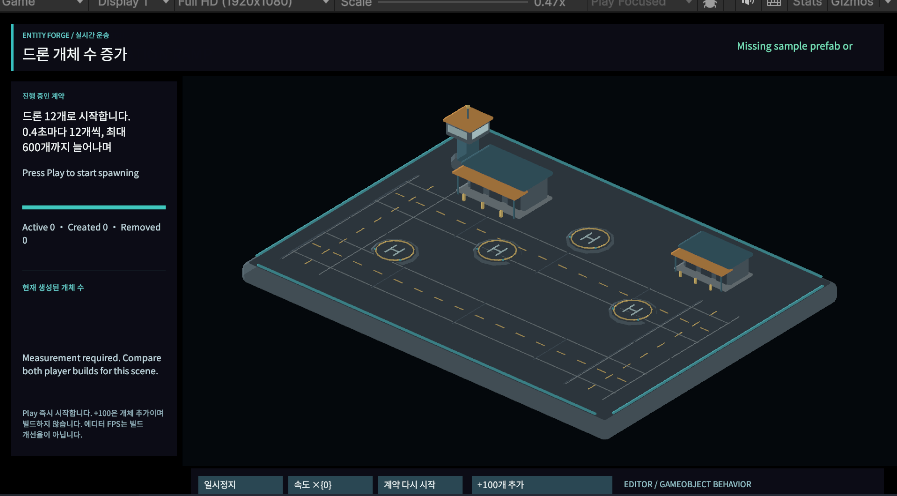
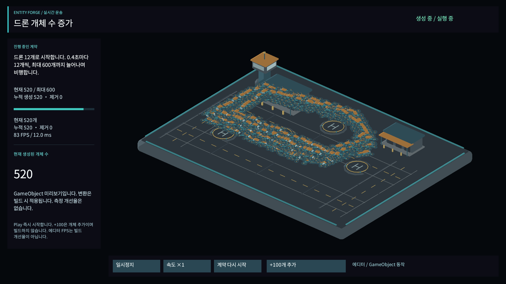
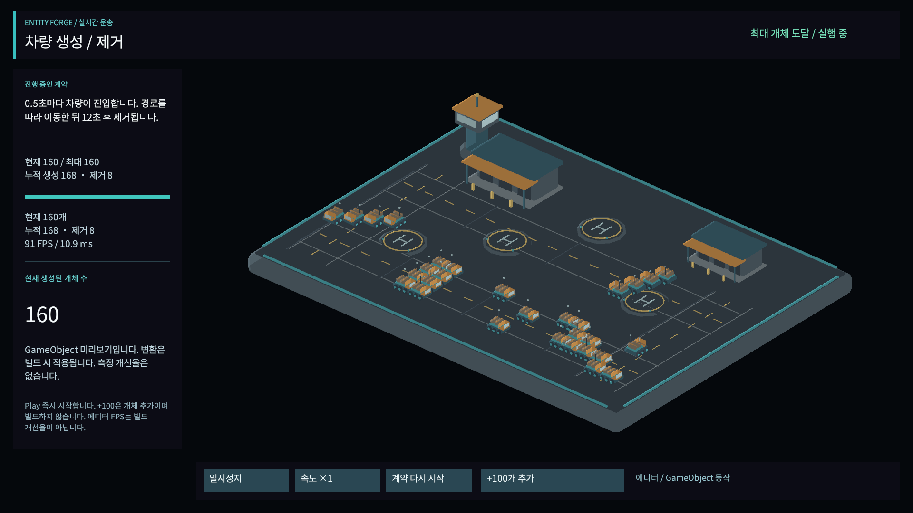
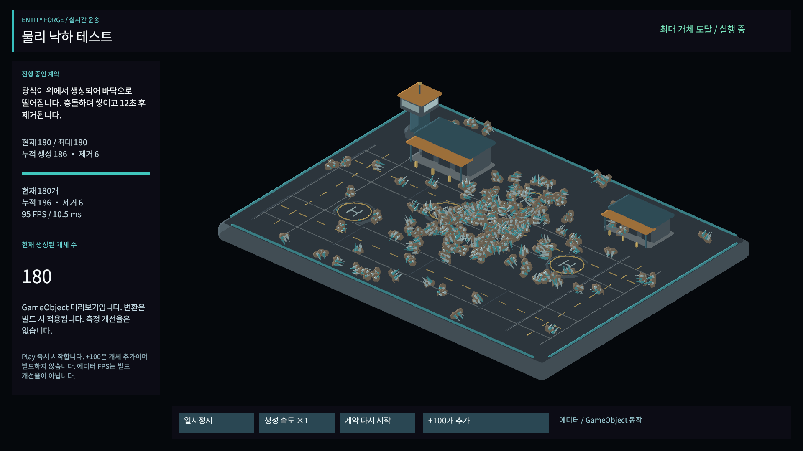

Tracefolio REPORTS & ISSUES
Tracefolio REPORTS & ISSUESEntity Forge 예제 프리팹 참조 복구와 실제 3개 씬 실행 검증
해결Unity가 읽지 못한 프리팹 3개를 네이티브 API로 저장하고 씬 참조를 복구했습니다. 세 씬의 생성·이동·제거·일시정지·재시작·물리 낙하를 실제 Play에서 확인했습니다.
작업 결과
3개 프리팹을 실제 Unity PrefabUtility.SaveAsPrefabAsset로 다시 저장했습니다. GUID를 유지하고 Unity가 부여한 실제 root fileID를 씬 참조에 반영했습니다. 이후 프리팹은 정상 로드되고 생성 정의의 invalid 목록은 비었습니다. 실제 Play에서 개체가 생성되고 렌더링되는 것을 확인했습니다.
변경 내용
재현 조건
Unity 6000.0.83f1 / Windows / Built-in. 사용자가 이번 Unity 재생 중단·재로드·화면 검증을 허용했습니다.
재현 순서
Drone Hangar에서 Play를 누릅니다. 생성된 개체가 없고 HUD 상단에 Missing sample prefab or route 오류가 나타납니다.
기대 동작
유효한 프리팹이 생성되고 이동하며 현재 개체 수가 증가합니다.
실제 동작
네이티브 진단에서 프리팹 3개 LoadAssetAtPath<GameObject>가 null, 씬 생성 정의 120개의 prefab 참조가 null이었습니다. route는 5개 좌표이며 DispatchActor 스크립트 클래스는 로드됐습니다.
원인
프리팹을 파일로 작성한 뒤 Unity 실제 로딩과 직렬화 참조 검증을 하지 않아, 로딩되지 않는 에셋을 씬에서 참조했습니다. Start의 입력 검증이 실패해 컴포넌트가 비활성화됐습니다. 파일 존재와 GUID/로컬 참조 검사만으로 앞서 충분히 검증했다고 판단한 것이 오류였습니다. 저수준 importer가 해당 파일을 거부한 상세 내부 조건까지는 확정하지 않았습니다.
적용 내용
프리팹 생성 개발 도구는 네이티브로 저장한 원본을 보존하고 실제 root ID를 재사용하도록 수정했습니다. HUD 바깥 영역을 매 프레임 지우는 카메라를 추가해 언어 전환 시 이전 글자 잔상을 제거했고, 큰 개체 수와 설명 글자의 높이/잘림을 정리했습니다. 광석 씬에는 바닥 경계를 추가해 개체가 바닥 밖으로 이탈하지 않도록 했습니다.




검증
Unity의 실제 씬을 순서대로 열어 Play를 실행했습니다. 드론은 기록 시점에 180→216→532개, 차량은 활성 160개/누적 생성 168개/제거 8개, 광석은 활성 Rigidbody 180개/누적 생성 186개/제거 6개를 확인했습니다. 세 씬 모두 첫 개체 위치 변화, 실제 GameObject/Renderer 수와 활성 수 일치, 일시정지 시 시계 정지, +100 상한 적용, 재시작 후 초기 개체 수를 확인했습니다. 광석의 마지막 최저 높이는 약 0.151로 경계 안 바닥 위에 유지됐습니다.
자동 검사 첫 회차는 상한에 가까워도 무조건 100개가 증가한다고 기대해 실패했습니다. 제품의 상한 처리는 맞았으며 검사를 min(100, 남은 용량)으로 수정했습니다. 화면 저장 직후 재시작해 캡처가 초기 상태를 담던 검사도 프레임 대기로 수정했으며 이전 시도는 보존했습니다. 최종 세 씬 실행은 통과했습니다.
7개 어셈블리 컴파일·씬 참조/버튼 연결·9언어 38키·Noto 535글리프 검사를 통과했습니다. 392개 에셋 패키지의 원본/메타 readback도 통과했습니다. 원본 1920×1080 PNG를 직접 확인했으며 한국어 가독성·수량 증거 보존을 위해 200KB 목표를 넘는 약 210~304KB 원본을 유지했습니다. 한국어 화면만 시각 검증했습니다. 네이티브 실행 기록
남은 사항
이 수정 후 별도 플레이어 빌드·새 프로젝트 설치·성능 개선율 측정은 수행하지 않았습니다. 다른 언어 배치와 제품 전체 UI/빌드 미완료 범위는 기존 메뉴얼에 유지합니다. 이전 예상 5~10분을 초과했습니다. 실제 Unity 검증 허용 후 프리팹 재작성, 씬 재로드 대화상자와 추가 HUD/물리 문제를 확인·수정하면서 시간이 늘었습니다. 교훈 검토: 기존 정적 검사와 실행 검증을 구분하라는 전역 지침을 적용하지 못한 문제였으며 새 규칙을 추가하지 않았습니다. 제품 QA에 실제 에셋 로딩·필수 컴포넌트·참조·Play 검사를 추가했습니다.
작업 시간
- 제안 시간: 5
10분. 네이티브 검증 허용 후 추가 58분 예상도 실제보다 짧았습니다. - 실제로 완료된 시간: 2026-11-02 21:32:38 KST 시작. 21:58:11 KST 최종 세 씬 Play 검사 통과. 22:01:48 KST 문서/패키지 갱신 완료. 공개 배포 확인 별도.
- XERJ: 실패 — Xerj.ps1 Status 노드 미실행 확인 후 rg·현재 소스와 실제 Unity API/Play 기록으로 대체.